专题5.3 一元一次方程的应用


教学目标 | 1. 能从实际问题中抽象出等量关系，建立一元一次方程模型，解决简单的和、差、倍、分问题、行程问题、工程问题等。 2. 经历分析、设元、列方程、解方程、检验的完整过程，提升逻辑推理能力和分析、解决问题的能力。 3. 体会方程思想，感受数学与生活的紧密联系，增强应用数学知识解决实际问题的意识。 |
教学重难点 | 1.重点 （1）正确分析各类实际问题中的等量关系。 （2）根据等量关系列出一元一次方程并求解，解决实际问题。 2.难点 （1）从复杂的文字描述中准确提取隐藏的等量关系 ，如行程问题中的路程、速度、时间关系，工程问题中的工作量、工作效率、工作时间关系等。 （2）合理设未知数，尤其是涉及多个量的题目，选择合适的未知量，避免因未知数设置不当导致方程复杂难解。 |

知识点01 列一元一次方程解应用题的步骤
①审：审题，分析题中已知什么，求什么，明确各数量之间关系
②设：设未知数（一般求什么，就设什么为x）
③找：找出能够表示应用题全部意义的一个相等关系
④列：根据这个相等关系列出需要的代数式，进而列出方程
⑤解：解所列出的方程，求出未知数的值
⑥答：检验所求解是否符合题意，写出答案（包括单位名称）
知识点02 用一元一次方程解决实际问题的常见类型
1.行程问题：路程＝速度×时间
2.顺水逆水问题：顺水速度=船速+水速；逆水速度=船速-水速
3.和差倍分问题：增长量＝原有量×增长率
4.利润问题：商品利润＝商品售价－商品进价
5.工程问题：工作量＝工作效率×工作时间，各部分劳动量之和＝总量
6.银行存贷款问题：本息和＝本金+利息，利息＝本金×利率×期数
7.数字问题：多位数的表示方法：例如：
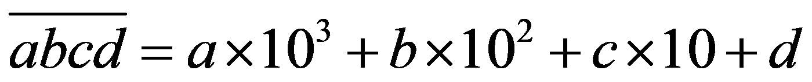
【即学即练】
1．（2025·陕西榆林·一模）我国古代数学名著《九章算术》中记载“粟米之法；粟率五十；粝米三十．今有米在十斗桶中，不知其数．满中添粟而春之，得米七斗．问故米几何？”意思为：50斗谷子能出30斗米，即出米率为 ．今有米在容量为10斗的桶中，但不知道数量是多少．再向桶中加满谷子，再舂成米，共得米7斗．问原来有多少斗米？（不计损耗）
．今有米在容量为10斗的桶中，但不知道数量是多少．再向桶中加满谷子，再舂成米，共得米7斗．问原来有多少斗米？（不计损耗）
2．（23-24七年级上·浙江绍兴·期末）某店用10000元的资金购进A，B两种商品共400件，并在“双十二”期间销售，两种商品的进价和售价如表所示：
进价（元） | 售价（元） | |
| 40 | 60 |
| 20 | 30 |
(1)求 商品购进的数量．
商品购进的数量．
(2)商品售出 商品售出
商品售出 后，由于销售情况不理想，该店推出“买一件商品送一件
后，由于销售情况不理想，该店推出“买一件商品送一件 商品，单独购买商品优惠
商品，单独购买商品优惠 元”的促销活动．一段时间后，A，B两种商品全部售完．已知剩余的商品都参加了促销活动，销售A，B两种商品共获利2125元，求的值．
元”的促销活动．一段时间后，A，B两种商品全部售完．已知剩余的商品都参加了促销活动，销售A，B两种商品共获利2125元，求的值．
3．（2025·北京·模拟预测）在“一盔一带”为主题的交通安全宣传和教育下，人们骑电动车、摩托车佩戴头盔的安全意识不断提高 某安全用品商店计划购进一批安全头盔进行销售于是商店老板联系了批发商，他们之间的对话如下：
某安全用品商店计划购进一批安全头盔进行销售于是商店老板联系了批发商，他们之间的对话如下：
你好请问你那里的安全头盔批发价是多少？ |
我有三种型号的安全头盔，批发价分别是 ①一次性累计购买 ②一次性累计购买 |
 个；
个； 元
元 型
型 元
元 个及以上九五折优惠
个及以上九五折优惠
(1)若该商店计划一次性购进型安全头盔 个和型安全头盔
个和型安全头盔 个，共需多少钱？
个，共需多少钱？
(2)若该商店计划用 元一次性购进两种不同型号的安全头盔
元一次性购进两种不同型号的安全头盔 个，请你研究一下该商店的进货方案有哪几种？
个，请你研究一下该商店的进货方案有哪几种？

题型01 一元一次方程的应用之古代问题
【典例1】（24-25七年级上·陕西汉中·期末）列一元一次方程解应用题：我国古代数学著作《孙子算经》中有如下问题：“今有三人共车，二车空；二人共车，九人步，问车有几何？”其意思是：“每车坐3人，空出来2车；每车坐2人，9人没车坐，问车有多少辆？”
【变式1】（24-25七年级上·辽宁大连·期末）《孙子算经》中记载了这样一道题：“今有百鹿进城，每家取一鹿，不尽，又三家合取一鹿，恰尽”．问：有多少户人家？大意为：有100头鹿，首先每户分一头鹿，发现还有剩余，将剩下的鹿给每3户分一头，恰好分完，问共有多少户人家？
【变式2】（24-25七年级上·浙江金华·期末）相传有神龟出于洛水，其背上有此图案（图1），史称“洛书”，图2是洛书的数字表示．这也就是术数中常说的“九宫格”，就是将已知的9个数填入 的方格中，使每一行、每一列以及两条斜对角线上的数字之和都相等，图3，图4的幻方均满足此规律．
的方格中，使每一行、每一列以及两条斜对角线上的数字之和都相等，图3，图4的幻方均满足此规律．

(1)请填出图3幻方空格中的数．
(2)求图4幻方中 的值．
的值．
【变式3】（24-25九年级下·安徽淮南·开学考试）《周髀算经》是中国现存最早的数理天文著作．书中记载这样一道题：“今有女子不善织，日减功迟．初日织五尺，末日织一尺，今三十日织讫．问织几何？”
译文：现有一个不擅长织布的女子，织布的速度越来越慢，并且每天减少的数量相同，第一天织了五尺布，最后一天仅织了一尺布，30天完工，问一共织了多少布？请解答上述问题．
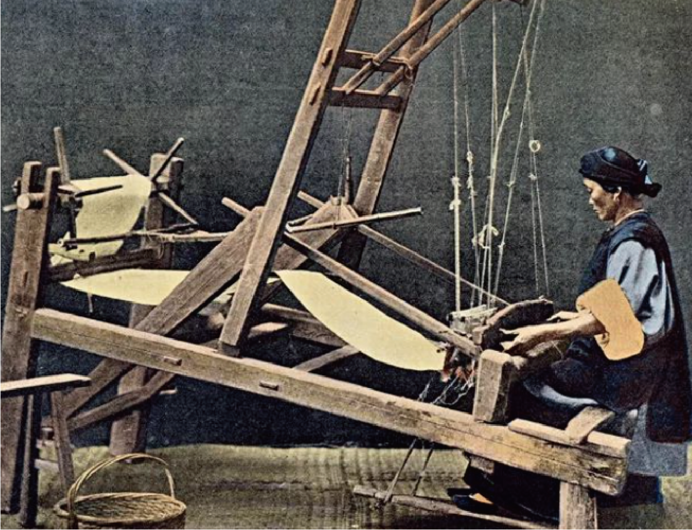
题型02 一元一次方程的应用之销售问题
【典例2】（24-25七年级下·重庆·阶段练习）随着 打印技术越来越成熟，家用打印机也逐步走进各家各户．某公司根据市场需求代理甲、乙两种型号的家用打印机，每台甲型打印机比每台乙型打印机进价高
打印技术越来越成熟，家用打印机也逐步走进各家各户．某公司根据市场需求代理甲、乙两种型号的家用打印机，每台甲型打印机比每台乙型打印机进价高
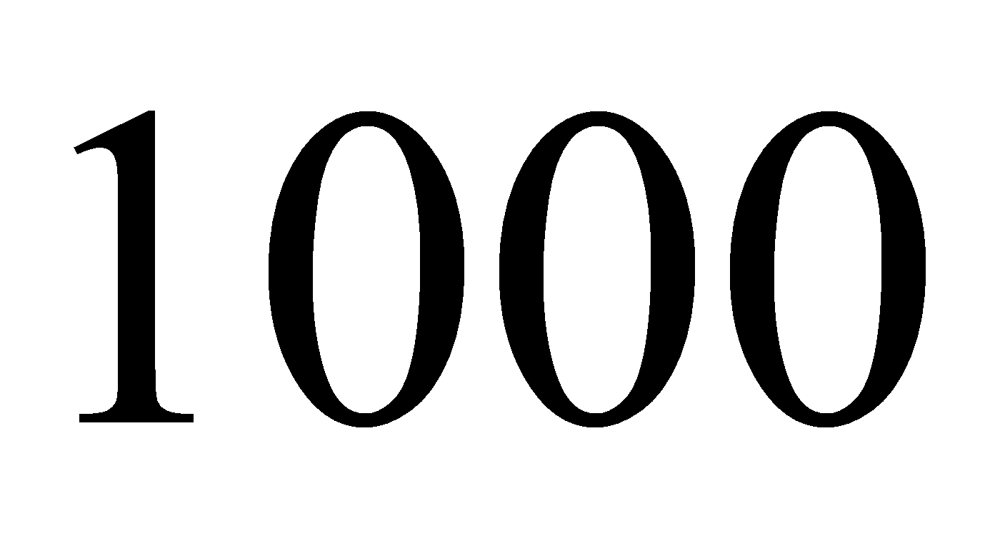
元．(1)设每台乙型打印机为元，则每台甲型打印机为 元(用x表示)．
(2)若购买 台甲型打印机和
台甲型打印机和 台乙型打印机共花费
台乙型打印机共花费 元，求每台甲型、乙型打印机的进价各是多少元？
元，求每台甲型、乙型打印机的进价各是多少元？
【变式1】（24-25九年级下·安徽六安·开学考试）试根据图中信息，解答下列问题：
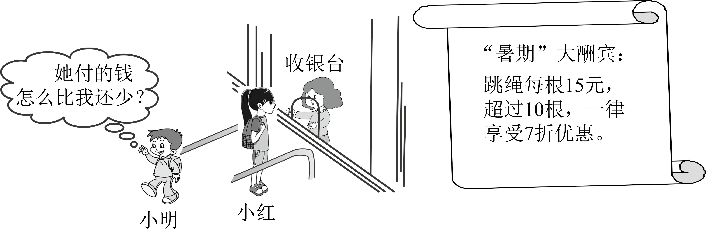
(1)购买5根跳绳需_____元，购买15根跳绳需_____元．
(2)小红比小明多买3根，付款时小红反而比小明少9元，请求出小红购买跳绳的根数．
【变式2】（24-25七年级上·湖北武汉·阶段练习）小张开了一家皮鞋店，为尽快出售，小张决定将皮鞋打折销售．若每双皮鞋按标价的4折出售将亏40元，而按标价的8折出售将赚40元．
(1)请你算一算每双皮鞋的标价和进价各是多少元？
(2)该皮鞋改款后，小张又以同样的进价进货500件，若标价不变，按标价销售了300件后，剩下的进行大甩卖，为了尽快减少库存，又要保证盈利2万元，请你告诉小张最低能打几折？
【变式3】（24-25七年级上·云南临沧·阶段练习）某商店购进甲、乙两种型号的节能灯，若购买 只甲型号节能灯和
只甲型号节能灯和 只乙型号节能灯共需
只乙型号节能灯共需 元．其中甲、乙两种型号的节能灯的进价、售价如下表：
元．其中甲、乙两种型号的节能灯的进价、售价如下表：
型号 | 进价（元/只） | 售价（元/只） |
甲型 |
|
|
乙型 |
|
|


(1)求甲、乙两种型号的节能灯的进价各是多少？
(2)第一次该商店购进甲、乙两种型号的节能灯共 个，全部售完后总利润（利润
个，全部售完后总利润（利润 售价
售价 进价）为
进价）为 元，求该商店甲、乙两种型号的节能灯分别购进多少只？
元，求该商店甲、乙两种型号的节能灯分别购进多少只？
(3)第二次该商店购进了与第一次一样多的甲、乙两种型号的节能灯，由于两种节能灯的进价都比第一次优惠了 ，该商店准备对乙型节能灯进行打折销售，让利于客户，甲型节能灯售价不变，全部售完后总利润比第一次还多赚
，该商店准备对乙型节能灯进行打折销售，让利于客户，甲型节能灯售价不变，全部售完后总利润比第一次还多赚 元，求乙型节能灯打了几折？
元，求乙型节能灯打了几折？
题型03 一元一次方程的应用之方案问题
【典例3】按照“双减”政策，丰富课后托管服务内容，学校准备订购一批排球和跳绳，经过市场调查后发现排球120元/个，跳绳20元/根．某体育用品商店提供A、B两种优惠方案（顾客只能选择其中一种方案）：
A方案：买一个排球送一根跳绳；
B方案：排球和跳绳都按定价的90%付款．
(1)若学校要购买排球50个，跳绳100根，则选择________方案更优惠
若学校要购买排球50个，跳绳300根，则选择________方案更优惠；
(2)若学校要购买排球50个，跳绳x根（
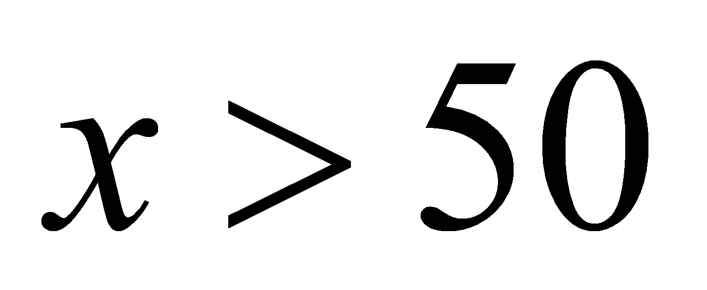
），请问购买多少根跳绳时，A、B两种方案所需要的钱数一样多？【变式1】“中国最美的五大沙漠之一”—鸣沙山月牙泉风景名胜区，是国家 级旅游景区，寒假期间拟定门票价格为50元/张，团队票可选择两种购票优惠方案：
级旅游景区，寒假期间拟定门票价格为50元/张，团队票可选择两种购票优惠方案：
方案一：全体人员打八折．
方案二：有 人可以免票，剩下的人员打九折．
人可以免票，剩下的人员打九折．
(1)若某团队有 人，为节省购票费用，则该团队应该选择哪种购票方案？
人，为节省购票费用，则该团队应该选择哪种购票方案？
(2)若某团队无论选择哪种方案购票，费用恰好一样，则该团队共有多少人？
【变式2】学校10月19日举办体育文化艺术节活动，准备单色圆珠笔、双色圆珠笔、三色圆珠笔三种圆珠笔共1000支作奖励（每种圆珠笔都要有），其中双色圆珠笔的单价比单色圆珠笔的单价贵0.2元，买5支双色圆珠笔和8支单色圆珠笔共需要6.2元．
三色圆珠笔级别 | 球珠直径 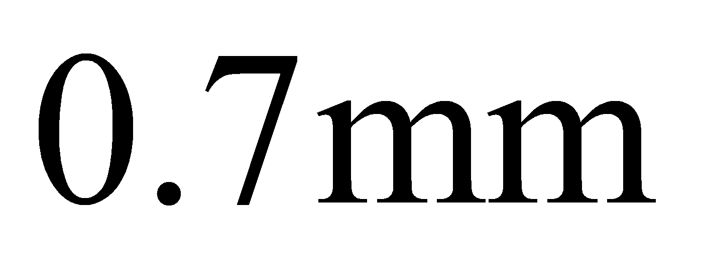 | 球珠直径 |
单价 | 1元 | 1.5元 |

(1)双色圆珠笔和单色圆珠笔的单价分别是多少元？
(2)若某超市的三色圆珠笔根据球珠直径有两个级别，学校只能从中选择一个级别．价格如上表：现在学校用880元去购买这三种圆珠笔，且单色圆珠笔和三色圆珠笔的数量是相同的，应该选样哪种级别的三色圆珠笔比较合适？购买方案是什么？请说明理由．
【变式2】2025年是中国农历乙巳蛇年，胖东来超市有蛇年吉祥物毛绒公仔“已升升”A，B两种款式出售．B种款式每个售价比A种款式贵10元；购买20个A种蛇年吉祥物和30个B种蛇年吉祥物共需花费2300元．
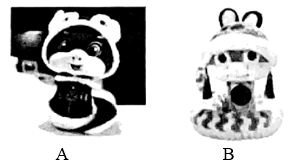
(1)A，B两种款式吉祥物每件售价各是多少？
(2)复兴中学计划购买B种款式吉祥物在寒假期间家访时送给留守儿童作为新年礼物，且购买数量超过50个，超市了解情况后特别给出两种优惠方案：
方案一：每个均按原售价的7折优惠；
方案二：前50个按原售价8折优惠，超过50个的部分每个按半价出售．
复兴中学选择哪种方案购买更合算？
(3)年货节期间，A款吉祥物按原售价9折出售，B款吉祥物按原售价的8.8折出售，打折后一周内两款吉祥物共售出100个，若A款吉祥物进价25元/个，B款吉祥物进价30元/个，结果两款吉祥物总利润一样，则A、B两款吉祥物这周内各售出多少个？
题型04 一元一次方程的应用之配套问题
【典例4】一台仪器由1个A部件和3个B部件构成．用 钢材可以做40个A部件或240个B部件．现要用
钢材可以做40个A部件或240个B部件．现要用
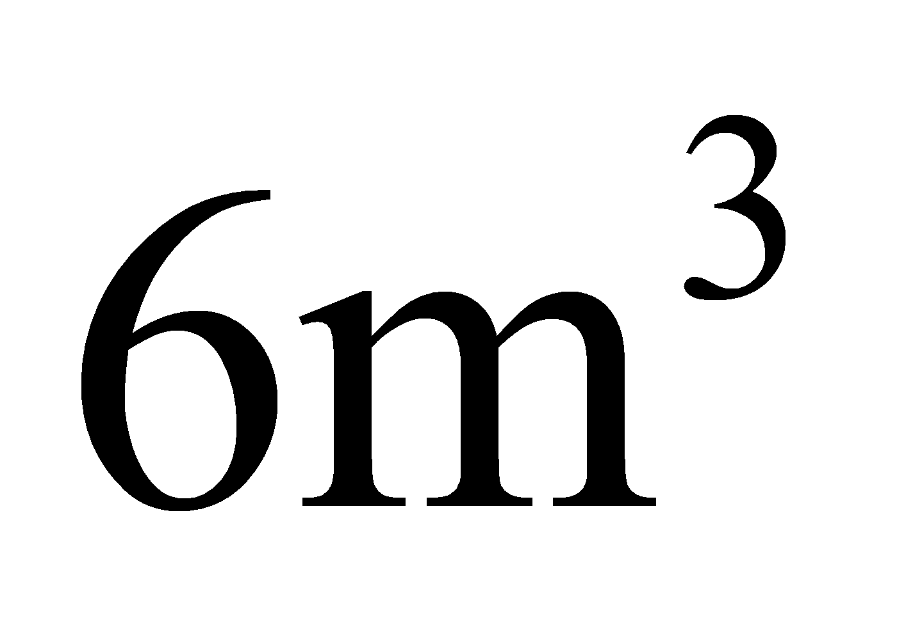
钢材制作这种仪器，应用多少 钢材做A部件，多少钢材做B部件，才能制作尽可能多的仪器？最多能制成多少台仪器？
钢材做A部件，多少钢材做B部件，才能制作尽可能多的仪器？最多能制成多少台仪器？【变式1】今年是长春博硕学校十年校庆，筹备期间，七年级同学承担了制作六面体灯笼的任务、制作一个灯笼需要用2个底面和4个侧面．现共有120张卡纸，已知一张卡纸可以制作10个底面或者20个侧面，为了使制作的底面和侧面刚好配套，用于制作底面的卡纸应该有多少张？
【变式2】某车间每天能制作500个甲种零件，或250个乙种零件（同一天内不能同时制作这两种零件），甲、乙两种零件各1个配成1套产品．现要用30天制作最多的成套产品，甲、乙两种零件各应制作多少天？
【变式3】某车间为提高生产总量，在原有14名工人的基础上，新调入若干名工人．使得调整后车间的总人数比新调入工人人数的2倍多6人．
(1)求新调入多少名工人？
(2)若该车间每名工人每天可以生产240个螺栓或400个螺母，若1个螺栓需要2个螺母．在新调入工人后，应该安排多少名工人生产螺栓，才能使每天生产的螺栓和螺母刚好配套？
题型05 一元一次方程的应用之工程问题
【典例5】甲、乙两人共同承包一项工程，甲单独做30天完成，乙单独做20天完成，合同规定15天完成，否则每超过1天罚款1000元．
(1)在规定时间内，甲、乙两人能否完成这项工程？
(2)现两人合作了这项工程的 ，因别处有急事，必须调走1人．调走谁更合适？
，因别处有急事，必须调走1人．调走谁更合适？
【变式1】一项工程，甲队单独做需18天，乙队单独做需24天，如果两队合作8天后，余下的工程再由甲队单独完成．
(1)甲队还需多少天才能完成这项工程？
(2)若甲队每天的酬劳为2000元，乙队每天的酬劳为1500元，问完成这项工程共需支付两队多少钱？
【变式2】哈尔滨亚冬会的某个比赛场馆正在装修，装修后产生的建筑垃圾需要清理．计划租用甲、乙两车队清理建筑垃圾，已知甲车队单独运完需要 天，乙车队单独运完需要
天，乙车队单独运完需要 天．乙车队先运了
天．乙车队先运了 天，然后甲、乙两车队合作运完剩下的垃圾．
天，然后甲、乙两车队合作运完剩下的垃圾．
(1)甲、乙两车队合作还需要多少天运完垃圾？
(2)已知甲车队每天的租金 元，比乙车队少元，运完垃圾后共需支付甲、乙两车队租金多少元？
元，比乙车队少元，运完垃圾后共需支付甲、乙两车队租金多少元？
题型06 一元一次方程的应用之行程问题
【典例6】小明、小杰两人在400米的环形赛道上练习跑步，小明每分钟跑280米，小杰每分钟跑220米．若小明、小杰两人同时同地反向出发，那么出发几分钟后，小明，小杰第一次相遇？
【变式1】甲站和乙站相距 ，一列慢车从甲站开出，速度为
，一列慢车从甲站开出，速度为 ，一列快车从乙站开出，速度为
，一列快车从乙站开出，速度为
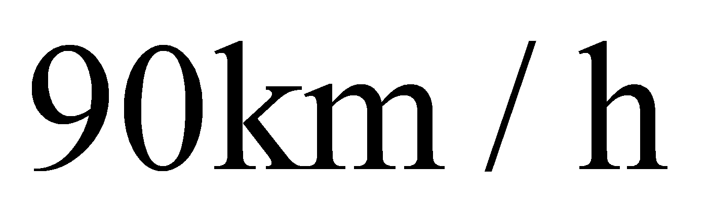
．(1)若两车相向而行，慢车先开 ，快车开出多少小时后两车相遇？
，快车开出多少小时后两车相遇？
(2)若两车同时开出，相背而行，多少小时后两车相距 ？
？
(3)若两车同时开出，快车在慢车后面同向而行，多少小时后两车相距
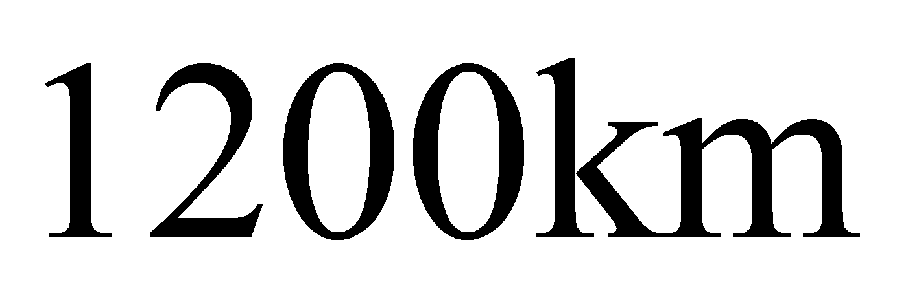
（快车在慢车的后面）？【变式2】已知在数轴上点A表示的数为8，B在A点左侧，且A，B两点间的距离为14．动点P从点A出发，以每秒4个单位长度的速度沿数轴向左匀速运动，点Q从B点向右运动，速度为每秒2个单位，PQ同时出发，设运动时间为 秒．
秒．
(1)数轴上点B表示的数是______；当点P运动到 的中点时，它所表示的数是______．
的中点时，它所表示的数是______．
(2)动点Q从点B出发，以每秒2个单位长度的速度沿数轴向右匀速运动，求：
①当点P和点Q运动多少秒时，点P和点Q第一次相遇？
②当点P运动多少秒时，点P与点Q间的距离为6个单位长度？
题型07 一元一次方程的应用之数字问题
【典例7】一个两位数，十位数字是个位数字的 2 倍，将两个数对调后得到的新两位数与原两位数的和是99，原两位数是 ．
【变式1】将奇数 至
至 按照顺序排成下表：
按照顺序排成下表：
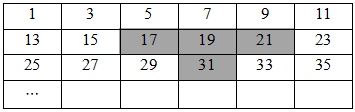
记 表示第
表示第 行第
行第 个数，如
个数，如 表示第
表示第 行第
行第 个数是
个数是 ．
．
(1) ；
；
(2)将表格中的 个阴影格子看成一个整体并平移，所覆盖的个数之和能否等于
个阴影格子看成一个整体并平移，所覆盖的个数之和能否等于 ．若能，求出个数中的最大数；若不能，请说明理由；
．若能，求出个数中的最大数；若不能，请说明理由；
(3)用、的式子表示 ；
；
(4)若 ，求、的值．
，求、的值．
【变式2】如图，阶梯图的每个台阶上都标着一个数，从下到上的第1个至第4个台阶上依次标着 ，
， ，1，9，且任意相邻四个台阶上的数的和都相等．
，1，9，且任意相邻四个台阶上的数的和都相等．
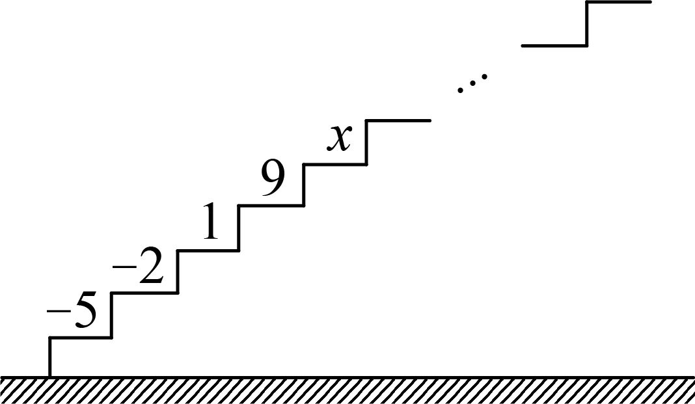
(1)前4个台阶上的数的和是多少？
(2)第5个台阶上的数x是多少？
(3)试用含k（k为正整数）的式子表示出数“1”所在的台阶数．
题型08 一元一次方程的应用之比赛问题
【典例8】“办学互助”是萧红中学办学特色之一．七年18班的第一组6名同学，自行组织知识竞赛，共设20道选择题，各题分值相同，每题必答，下表记录的是5名同学的得分情况：
参赛者 | A | B | C | D | E |
答对题数 | 20 | 19 | 18 | 14 | 10 |
答错题数 | 0 | 1 | 2 | 6 | 10 |
得分 | 100 | 94 | 88 | 64 | 40 |
(1)由表格知，答对一题得________分，答错一题得________分；
(2)第6名同学F得了82分，请你帮他算一算，答对了几道题？
【变式1】在2022年女足亚洲杯决赛中，中国女足以 逆转韩国女足，时隔16年再夺亚洲杯冠军！某学校掀起一股足球热，举行了班级联赛，九（1）班开局11场保持不败，共积25分，按照比赛规则，胜一场积3分，平一场积1分，负一场积0分，求该班获胜的场数．
逆转韩国女足，时隔16年再夺亚洲杯冠军！某学校掀起一股足球热，举行了班级联赛，九（1）班开局11场保持不败，共积25分，按照比赛规则，胜一场积3分，平一场积1分，负一场积0分，求该班获胜的场数．
【变式2】某校初一（3）班组织生活小常识竞赛，共设20道选择题，各题分值相同，每题必答．下表记录了其中4个参赛者的得分情况．
参赛者 | 答对题数 | 答错题数 | 得分 |
A | 20 | 0 | 100 |
B | 18 | 2 | 88 |
C | 64 | ||
D | 10 | 10 | 40 |
(1)参赛者E说他错了10个题，得分为50分，请你判断可能吗？并说明理由：
(2)参赛者C答对了几道题？请你通过计算说明．
题型09 一元一次方程的应用之几何问题
【典例9】如图，在 中，
中， ，
， ，
， ，点
，点 是
是 的中点，动点
的中点，动点 从
从 点出发，以每秒个单位的速度沿
点出发，以每秒个单位的速度沿 运动．若设点运动的时间是
运动．若设点运动的时间是 ，若
，若 的面积等于
的面积等于 ．那么
．那么 值是（ ）
值是（ ）
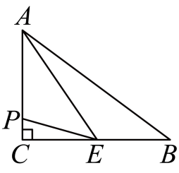
A． B．
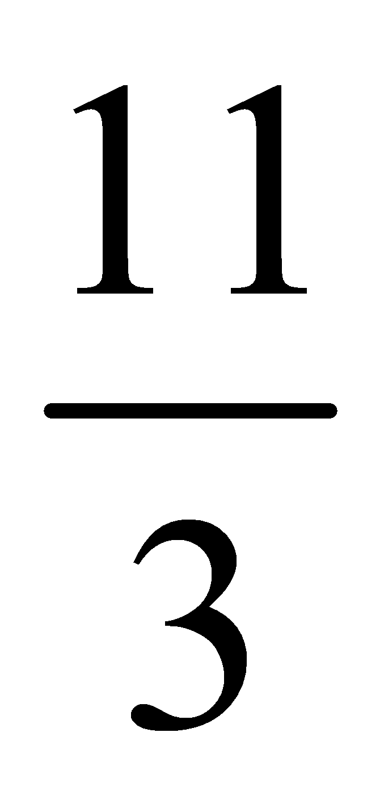
C．或 D．不存在【变式1】如图，8张正方形泡沫板拼成一个长方形展板，其中最小的两个正方形边长均为1米，则长方形展板的面积是 平方米．

【变式2】如图1，在长方形 中，．点P从点B出发，以
中，．点P从点B出发，以 的速度沿方向运动到点C停止，点Q从点C出发，以
的速度沿方向运动到点C停止，点Q从点C出发，以 的速度沿
的速度沿 方向运动到点C停止，连接
方向运动到点C停止，连接 、
、 ；若P、Q两点同时出发，设点P的运动时间为t秒
；若P、Q两点同时出发，设点P的运动时间为t秒 ，
， 的面积为
的面积为 ．
．

(1)当 时，
时， _________；当
_________；当 时，_________．
时，_________．
(2)当点P和点Q相遇时，求t的值．
(3)当 时，用含t的代数式表示S．
时，用含t的代数式表示S．
(4)如图2，在点P和点Q不重合的情况下，连接 ，当以A、P、Q、D为顶点的四边形的面积是长方形的面积的
，当以A、P、Q、D为顶点的四边形的面积是长方形的面积的 时，直接写出t的值．
时，直接写出t的值．
题型10 一元一次方程的应用之电费和水费问题
【典例10】某市出租车收费标准是：起步价10元，可乘 ；到
；到
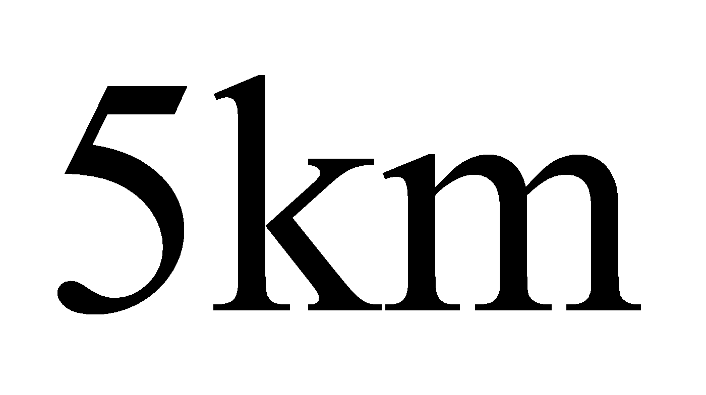
时，超过的部分按 元
元 的标准收费；超过时，超过的部分按2元的标准收费．（不足
的标准收费；超过时，超过的部分按2元的标准收费．（不足 的按计算）
的按计算）(1)若某人乘坐了
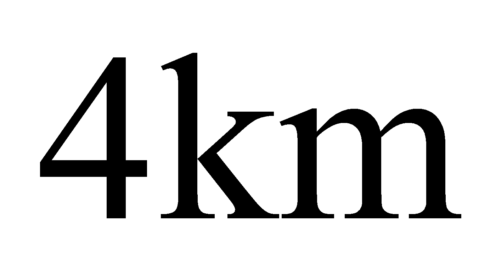
的路程，则他应支付的费用为 ；(2)若某人乘坐了x（
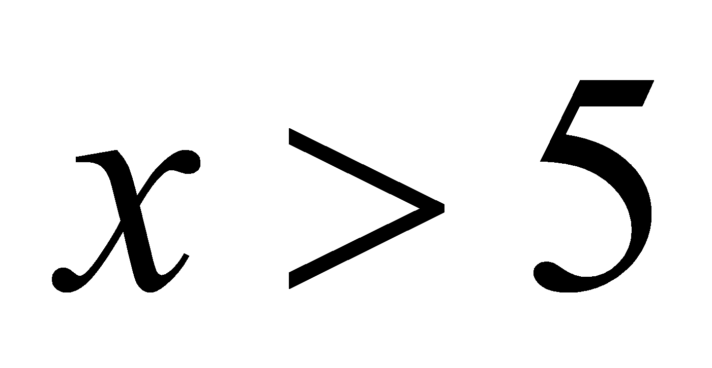
的整数）千米的路程，则他应支付的费用为 ；(3)若某人乘坐出租车共花了15元，问出租车行驶了多少公里？
【变式1】我市某小区居民使用自来水2024年标准缴费如下（水费按月缴纳）：
用户月用水量 | 单价 |
不超过12 | a元/ |
超过12 |
|
超过20 |
|
 元/
元/ 元/
元/(1)某户4月份用了13 的水，求该户4月份应缴纳的水费；（用含a的式子表示）
的水，求该户4月份应缴纳的水费；（用含a的式子表示）
(2)设某户月用水量为n，当 ，
， 时，该户应缴纳的水费为多少元？（用含n的式子表示）
时，该户应缴纳的水费为多少元？（用含n的式子表示）
(3)当 时，甲、乙两户一个月共用水32，已知甲户缴纳的水费超过了24元，设甲户这个月用水x，试求甲，乙两户一个月共缴纳的水费．（可用含x的式子表示）
时，甲、乙两户一个月共用水32，已知甲户缴纳的水费超过了24元，设甲户这个月用水x，试求甲，乙两户一个月共缴纳的水费．（可用含x的式子表示）
【变式2】为响应国家节能减排的号召，鼓励人们节约用电，保护能源，某市实施用电“阶梯价格”收费制度．收费标准如表：
居民每月用电量 | 单价（元 |
不超过50度的部分 |
|
超过50度但不超过200度的部分 |
|
超过200度的部分 |
|
 度）
度）


已知小智家上半年的用电情况如表（以200度为标准，超出200度记为正、低于200度记为负）
一月份 | 二月份 | 三月份 | 四月份 | 五月份 | 六月份 |
| 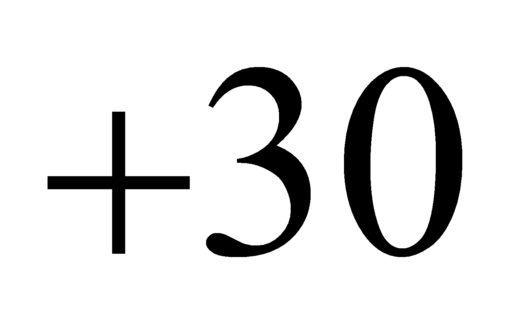 |
|
|
|
|


根据上述数据，解答下列问题：
(1)小智家用电量最多的是____月份，该月份应交纳电费_____元；
(2)若小智家七月份应交纳的电费 元，则他家七月份的用电量是多少？
元，则他家七月份的用电量是多少？

一、单选题
1．（24-25七年级上·甘肃张掖·期末）某商人一次卖出两件衣服，一件赚了 ，一件亏了，售价都是
，一件亏了，售价都是 元，在这次生意中，该商人（ ）
元，在这次生意中，该商人（ ）
A．不赚不赔 B．赚了 元 C．亏了元 D．亏了
元 C．亏了元 D．亏了 元
元
2．（25-26七年级上·全国·单元测试）《孙子算经》中记载：今有三人共车，二车空：二人共车，九人步，问人与车各几何？该题意思是：今有若干人乘车，每3人乘一车，最终剩余2辆车，若每2人共乘一车，最终剩余9个人无车可乘，问有多少人，多少辆车？若设有 辆车，则可列方程（ ）
辆车，则可列方程（ ）
A．
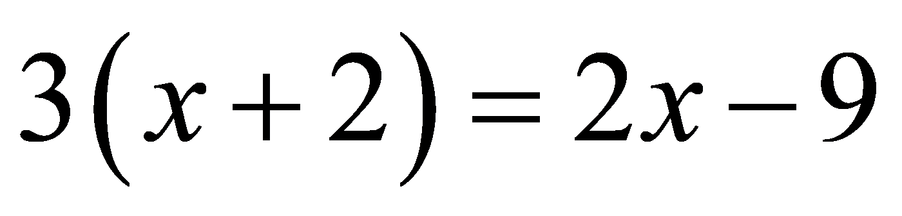
B．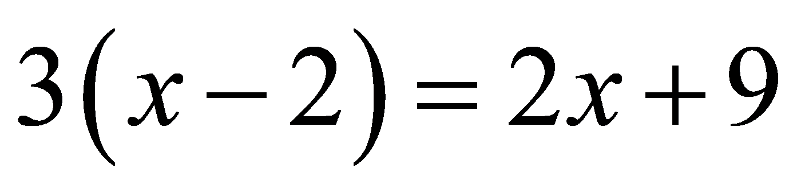
C． D．
D．
3．（25-26七年级上·天津河北·期中）如图是某月的月历，用形如“十”字型框任意框出5个数，这5个数的和不可能是（ ）

A．125 B．110 C．75 D．60
4．（24-25七年级下·甘肃武威·期中）某校七年级学生在多媒体教室看录像，若每排座位坐13人，则有1人无座位，若每排座位坐14人，则空12个座位，那么该校多媒体教室座位的排数是（ ）
A．13 B．14 C．15 D．16
5．（25-26七年级上·广东惠州·期中）幻方是古老的数学问题，我国古代的《洛书》中记载了最早的幻方—九宫格，将9个数填入幻方的空格中，要求每一横行、每一竖行以及两条对角线上的3个数之和相等．如图是一个未完成的幻方，则图中m的值为（ ）．

A．2 B．4 C．7 D．9
6．（2024九年级上·山东青岛·专题练习）“漏壶”是一种古代计时器，在一次实践活动中，某小组同学根据“漏壶”的原理制作了如图所示的液体漏壶，由一个圆锥和一个圆柱组成的，中间连通，液体可以从圆锥容器中匀速漏到圆柱体容器中，实验开始时圆柱体容器中已有一部分液体，下表是实验记录的圆柱体容器液面高度
 与时间
与时间 的数据：
的数据：
时间 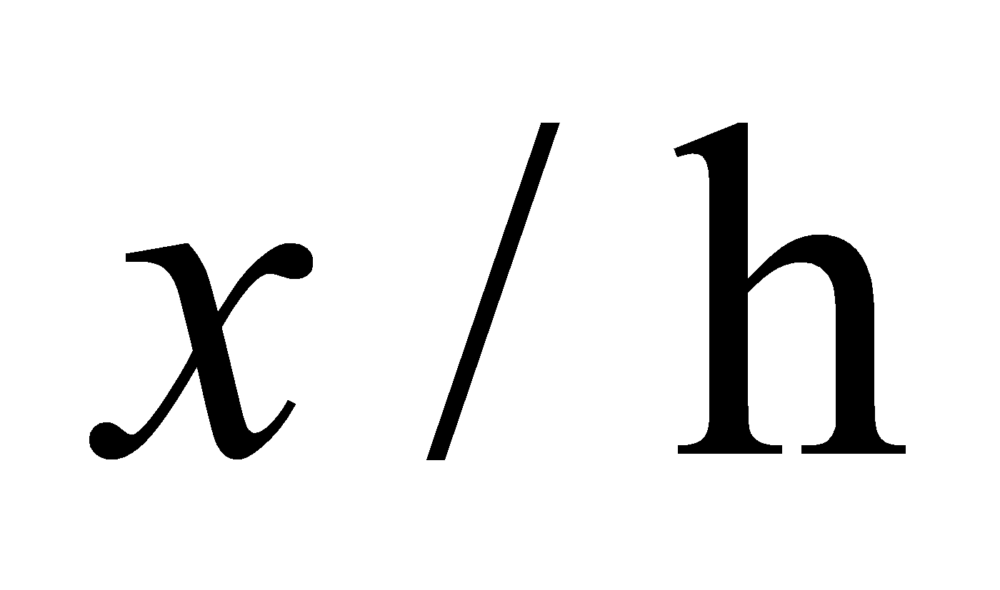 | 1 | 2 | 3 | 4 | 5 |
圆柱体容器液面高度 | 6 | 10 | 14 | 18 | 22 |

如果本次实验记录的开始时间是上午
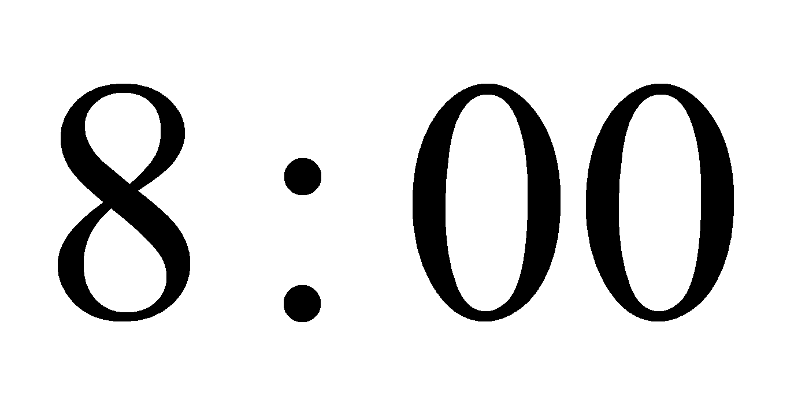
，那么当圆柱体容器液面高度达到 时是（ ）
时是（ ）
A． B．
B． C．
C． D．
D．
二、填空题
7．（24-25八年级上·安徽宿州·月考）一个两位数和一个一位数的和为20，把一位数放在两位数的左边得到一个三位数，再把一位数放在两位数的右边，又得到一个三位数，前一个三位数除以后一个三位数，商是7，余数是78，则这个两位数是 ．
8．（25-26七年级上·四川成都·月考）金牛区举办了“金教杯”校园足球超级联赛：比赛规则如下：胜一场得3分，平一场得1分，负一场得 分．某校园足球队进行了9场比赛，其中负2场，共得13分，那么该足球队共胜了 场．
分．某校园足球队进行了9场比赛，其中负2场，共得13分，那么该足球队共胜了 场．
9．（25-26六年级上·上海·期中）等候公共汽车的人整齐地排成一列，小明也在其中，他数了数人数，排在他前面的人数是总人数的 ，排在他后面的人数是总人数的
，排在他后面的人数是总人数的 ，从前面数小明排在第 个．
，从前面数小明排在第 个．
10．（25-26九年级上·黑龙江哈尔滨·期中）如图，长方形甲与三角形乙重叠部分的面积相当于长方形甲面积的，相当于三角形乙面积的，若两个图形不重叠部分的面积和是 ，则重叠部分的面积是
，则重叠部分的面积是  ．
．
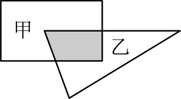
11．（25-26七年级上·内蒙古乌兰察布·期中）幻方是我国的一种传统游戏．如图，有一个类似于幻方的“幻圆”，将 ，
， ，
， ，0，3，5，7，9分别填入图中的圆圈内，使横、竖以及内、外两圈上的4个数字之和都相等．现已完成了部分填数，则图中
，0，3，5，7，9分别填入图中的圆圈内，使横、竖以及内、外两圈上的4个数字之和都相等．现已完成了部分填数，则图中 的值为 ．
的值为 ．
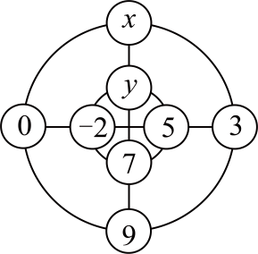
12．（25-26七年级上·黑龙江哈尔滨·期中）甲乙两车在南北方向的笔直公路上相距190千米，相向而行，甲出发30分钟后，乙再出发，甲的速度为60千米/时，乙的速度为40千米/时，则乙出发 小时后甲乙相距10千米．
三、解答题
13．（25-26七年级上·北京西城·期中）《九章算术》中记载有一道关于“盈不足术”的经典问题，其原文表述如下：“今有共买鸡，人出九，盈一十一；人出六，不足十六．问：人数、鸡价各几何？”译文为：有若干人一起买一只鸡，若每人出9钱，则多出11钱；若每人出6钱，则还差16钱．求买鸡的人数、一只鸡的价格各是多少？
14．（24-25七年级上·河南焦作·期中）某车间有 名工人，生产一种螺栓和螺帽，平均每人每小时生产螺栓
名工人，生产一种螺栓和螺帽，平均每人每小时生产螺栓 个或螺帽
个或螺帽 个，
个， 个螺栓要配
个螺栓要配 个螺帽，应安排多少名工人生产螺栓，多少名工人生产螺帽，才能使生产的螺栓和螺帽刚好配套？
个螺帽，应安排多少名工人生产螺栓，多少名工人生产螺帽，才能使生产的螺栓和螺帽刚好配套？
15．（2025九年级·江西·专题练习）把一批图书分给七年级某班的学生阅读，若每人分3本，则剩余20本；若每人分4本，则差25本．
(1)这个班有多少名学生？
(2)读书周期间，这个班级的学生去图书馆整理图书，由1个人做要
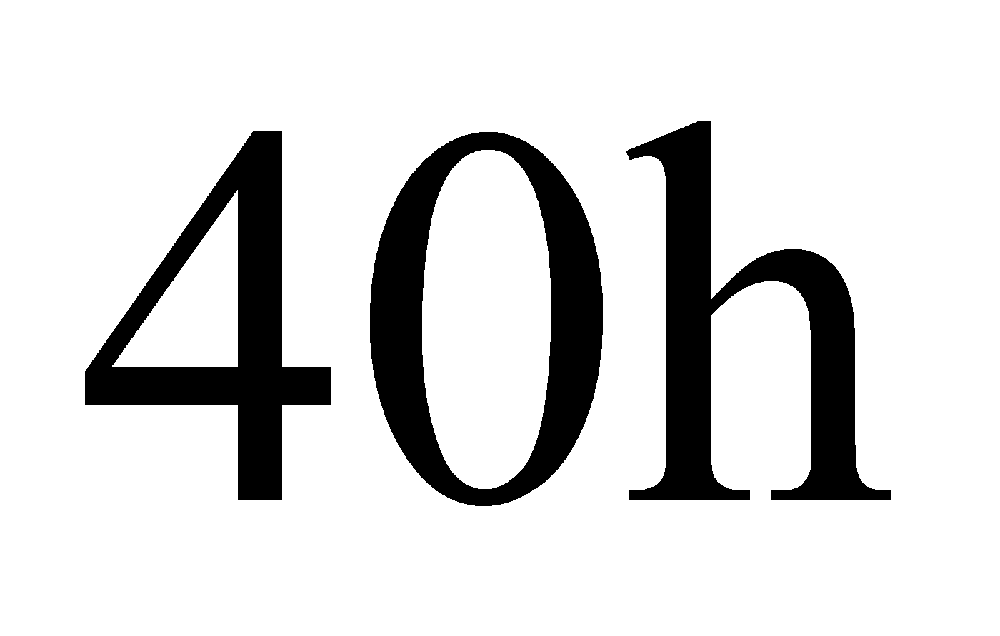
完成．现计划由一部分人先做4h，然后增加2人与他们一起做 ，正好完成这项任务．假设这些人的效率相同，具体应先安排多少人整理图书？
，正好完成这项任务．假设这些人的效率相同，具体应先安排多少人整理图书？16．（25-26七年级上·全国·课后作业）根据题意，设未知数并列出方程．
(1)一块长方形土地的周长为18米，长是宽的2倍多3米，求长方形的宽．
(2)某制衣店现购买蓝色、白色两种布料共50米，共花费690元．其中蓝色布料每米13元，白色布料每米15元，求两种布料各买多少米？
(3)某中学七年级一班足球队参加比赛，胜一场得2分，负一场得1分，该队共赛了9场，共得15分，该队胜了多少场？
17．（25-26七年级上·重庆·期中）如图1是2025年11月的月历，数学老师在数学活动课上开展月历中的数学游戏．
(1)任意框出图1某一列中相邻的3个数，若中间的数为，则这三个数的和为_____．（用含的式子表示）；
(2)用图2框出图1中的3个数，若这3个数的和为63，则这3个数分别是_____；
(3)用图3框出图1中的4个数，是否有可能这4个数的和是68？若有可能，求出这4个数；若不可能，请说明理由．
18．（25-26九年级上·黑龙江哈尔滨·期中）风华中学举办英语节活动，包括三大组别的节目：歌曲组、短剧组、演讲组，每位学生只能参加一个组别的节目．六年级有部分同学参加活动，其中的同学加入歌曲组，
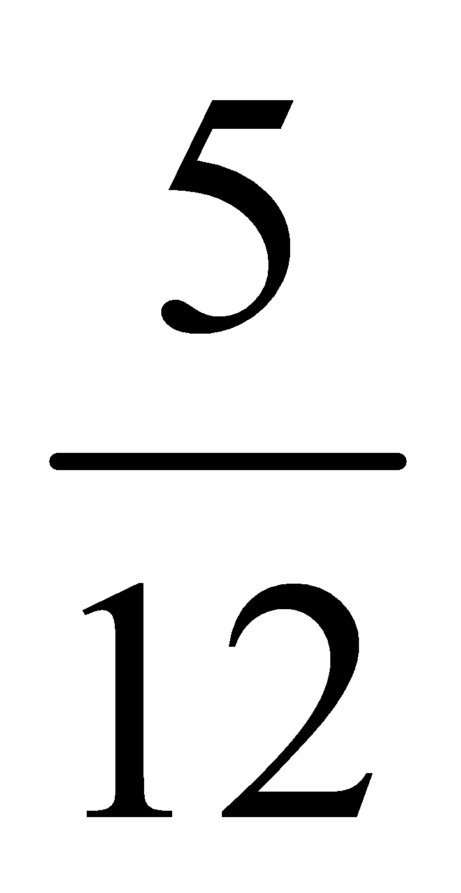
的同学加入演讲组，剩下20名同学加入短剧组，参加英语节的男生比女生少 ．
．(1)六年级参加英语节的学生有多少人；
(2)参加演讲组的男生是参加短剧组男生的，且比参加歌曲组的男生多 ，求参加歌曲组的男生有多少人；
，求参加歌曲组的男生有多少人；
(3)在（2）的条件下，由于英语节活动调整，一些学生从演讲组调整到歌曲组和短剧组，从演讲组调出学生中，3名男生全部调入歌曲组，调入歌曲组和短剧组的女生人数比为 ，此时歌曲组人数是短剧组人数的
，此时歌曲组人数是短剧组人数的 ，求调入歌曲组的女生有多少人．
，求调入歌曲组的女生有多少人．
19．（25-26七年级上·黑龙江哈尔滨·期中）为了鼓励市民节约用水，某市居民生活用水按阶梯式水价计费．下表是该市“一户一表”生活用水阶梯式计费价格表的部分信息：（说明：①每户产生的污水量等于该户自来水用量；②水费＝自来水费用＋污水处理费）
自来水销售价格 | 污水处理价格 | |
每户每月用水量 | 单价：元/吨 | 单价：元/吨 |
10吨及以下 | 2.5 | 0.50 |
超过10吨但不超过25吨的部分 | 3 | 0.50 |
超过25吨的部分 | 4.5 | 0.50 |
(1)已知小李家2025年7月用水8吨，应该交水费多少元？
(2)如果小李家9月份交水费40.5元，则小李家这个月用水多少吨？
(3)小李家10月份忘记去交水费，当他11月去交水费时发现两个月一共用水40吨（其中10月份用水超过25吨），一共交水费136元，求小李家11月份用水多少吨？
20．（25-26八年级上·四川成都·期中）为鼓励市民节约用电，某市电力公司对城乡居民用户采取按月用电量分档收费办法.现提供一户居民某月电费发票的部分信息如下表所示：
××居民电费专用发票 | |
计费期限：一个月 | |
用电量 | 电价（元/度） |
第一档： | 0.50 |
第二档： | 0.55 |
第三档： | 0.80 |
本月实用金额：106.5（元） | （大写）壹佰零陆元伍角 |


根据以上提供信息解答下列问题：
(1)如果月用电量用度来表示，实付金额用元来表示，当
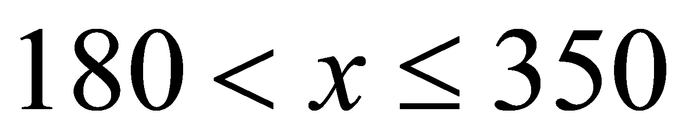
时，写出实付额元与月用电量度之间的函数关系式；(2)若小强家一个月的实际用电量为250度，则实付金额分别为多少元？
(3)请你根据表中本月实付金额，计算这个家庭本月的实际用电量．
21．（浙江省温州市2025-2026学年上学期期中统考七年级数学试卷）如图1，已知数轴上点 表示的数为
表示的数为 ，点
，点 表示的数为
表示的数为 ，且满足
，且满足
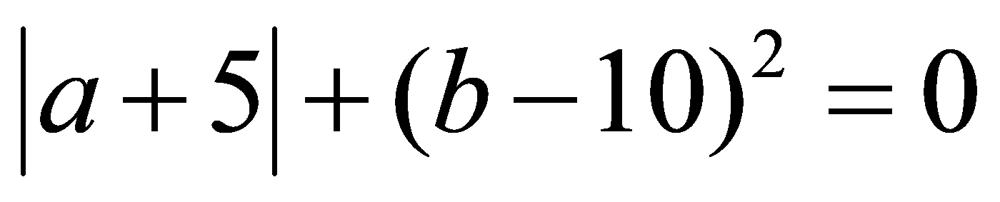
． 是数轴上的一个动点，点到点的距离表示为
是数轴上的一个动点，点到点的距离表示为 ，点到点的距离表示为
，点到点的距离表示为 ．
．

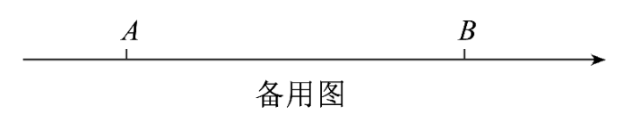
(1) ________，
________， ________；
________；
(2)当 时，求点所表示的数；
时，求点所表示的数；
(3)如图2，动点从点出发，以每秒1个单位长度的速度沿数轴向右运动，动点 从点出发，以与点相同的速度沿数轴向左运动．
从点出发，以与点相同的速度沿数轴向左运动．
①若运动时间均为 ，用代数式表示，之间的距离；
，用代数式表示，之间的距离；
②若点，之间的距离是点，之间距离的2倍，求此时运动时间 的值．
的值．
22．（25-26七年级上·福建泉州·期中）（1）、、、四点的位置在如图1所示的数轴上，规定点与点之间的距离表示为 ，若点A，B所表示的数a，b满足
，若点A，B所表示的数a，b满足 ，
， ，则
，则 ，
， ；
；
（2）在（1）的条件下，在该数轴上，线段以1个单位/ 的速度向正方向运动，同时线段
的速度向正方向运动，同时线段 以2个单位/的速度向负方向运动．那么这两条线段从开始运动到完全离开需要经过多少？
以2个单位/的速度向负方向运动．那么这两条线段从开始运动到完全离开需要经过多少？
（3）如图2，、、三点在以 为原点的数轴上，点在以为圆心，半径等于2的圆周上，且
为原点的数轴上，点在以为圆心，半径等于2的圆周上，且 ，点绕点以
，点绕点以 的速度顺时针旋转了
的速度顺时针旋转了 时停止运动；同时点沿数轴负方向以个单位
时停止运动；同时点沿数轴负方向以个单位 的速度运动，当到达点时马上以
的速度运动，当到达点时马上以 的速度绕点O逆时针旋转（当停止运动，也停止），问：点、开始运动后，在什么时刻，线段
的速度绕点O逆时针旋转（当停止运动，也停止），问：点、开始运动后，在什么时刻，线段 、
、
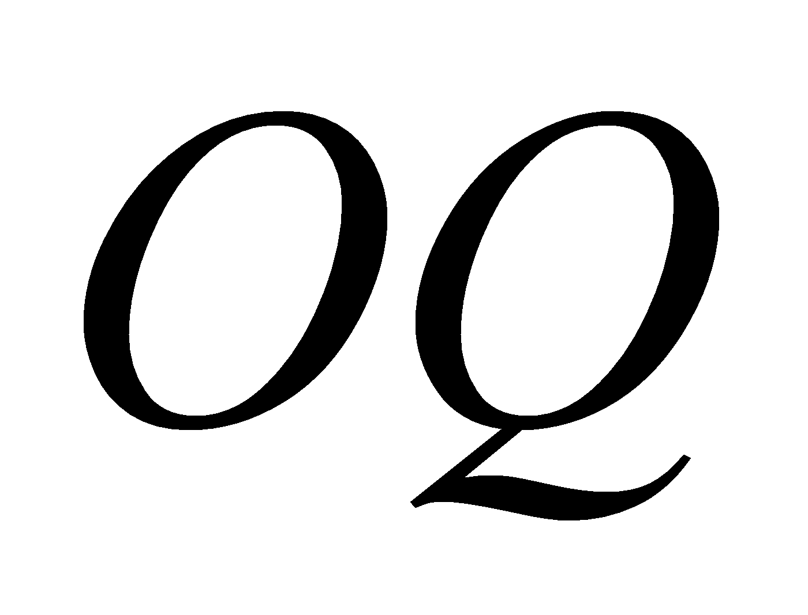
在同一直线上？